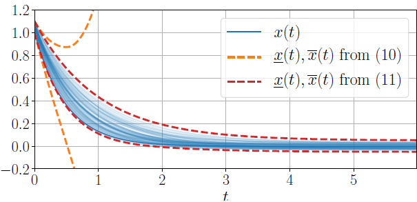

ROBUST PLANNING: Technical details
Odalric-Ambrym Maillard
HORIBA
July 09, 2025

Road map
- Linear system with unknown \(\theta\)
- How to estimation parameter \(\theta\) ?
- Approxiamting the confidence set
- State evolution and propagation
- Reward models
- Multi-model objective
Robust control in uncertain systems
Linear system
The continuous-time linear system dynamics are defined as: $$\dot{x}(t)=A(\theta)x(t)+Bu(t)+D\omega(t),\quad t\ge0$$
We observe \(x(t)\) plus a noisy version of the derivative: $$z(t) = \dot{x}(t) +C\nu(t)$$ where \(C\) is known and \(\nu(t)\) is a (Sub-)Gaussian measurement noise.
Estimate \(\theta\) with linear regression
Say, we have a
\(\mathcal{D}_N= \{(x_n,z_n,u_n)\}_{n\in[N]}\)
(state, noisy state derivative, control)
To estimate \(\theta\), we write a regression problem:
\(y_n = \Phi_n \theta + \eta_n \)
- We form the following quantities:
- \(y(t) = z(t)- Ax(t)-Bu(t)\)
- \(\eta(t) = C\nu(t)+D\omega(t)\)
It contains \(\theta\) with high probability: $$\mathbb{P}(\theta\in\mathcal{C}_{N,\delta})\ge1-\delta,$$ where \(\delta \in (0,1)\) is the confidence level.
Estimating the parameter \(\theta\)
Regression problem:
\(\min\limits_{\theta\in\mathbb{R}^{d}}\sum\limits_{n=1}^{N}||y_{n}-\Phi_{n}\theta||_{\Sigma_{p}^{-1}}^{2}+\lambda||\theta||^{2}.\)
Close-form solution:
\(\theta_{N,\lambda}=G_{N,\lambda}^{-1}\sum\limits_{n=1}^{N}\Phi_{n}^{\dagger}\Sigma_{p}^{-1}y_{n},\)
\(\text{where}\quad G_{N,\lambda}=\sum\limits_{n=1}^{N}\Phi_{n}^{T}\Sigma_{p}^{-1}\Phi_{n}+\lambda I_{d}\in\mathbb{R}^{d\times d}.\)
Confidence set, assuming \(\|\theta\|_2 \leq B\):
\(\cC_{n,\delta}= \big\{\theta: ||\theta_{N,\lambda}-\theta||_{G_{N,\lambda}}\le\beta_{N}(\delta)\big\}\)
where
\(\beta_{N}(\delta)\stackrel{\text{def}}{=}\sqrt{2\ln\left(\frac{\det(G_{N,\lambda})^{1/2}}{\delta\det(\lambda I_{d})^{1/2}}\right)}+(\lambda d)^{1/2}B.\)
Polytopic approximation of the confidence set.
We need to build
In high dimension, representing \(\{A(\theta), \theta\in\mathcal{C}_{N,\delta}\}\) may be challenging.
by bounding it with an enclosing axis-aligned hypercube: $$A(\theta)\in\left\{A_{N}+\sum_{i=1}^{2^{d}}\alpha_{i}\Delta A_{N,i}:\alpha\ge0,\sum_{i=1}^{2^{d}}\alpha_{i}=1\right\}.$$ Where \(A_{N}=A(\theta_{N,\lambda})\) and \(\Delta A_{N,i}=h_{i}\sqrt{\frac{\beta_{N}(\delta)}{\lambda_{\max}(G_{N,\lambda})}}\) for \(h_i \in \{-1,1\}^d\).
From \(2^d\) computations to \(d\) dimensional parameter \(\theta_{N,\lambda}\).
State evolution prediction
Two evolution prediction strategies
Propagation of: $$\dot{x}(t)=A(\theta)x(t)+Bu(t)+D\omega(t)$$ with uncertain \(\theta\), future \(x(t)\) and future disturbances \(\omega(t)\)
Yields exponential blow up.
Yields refined envelope.
Illustration for autonomous vehicles
Envelopes with naive (worst-case) propagation
Envelopes with enhanced propagation
Reward models
We can use different reward models, yielding
Multi-model Robust Objective
Likewise, we may consider
When considering multiple candidate dynamics models \((f^m)_{m \in [M]}\),
the
\(B_{a}^{r}(k)=\min\limits_{m\in[M]}\sum\limits_{n=0}^{h-1}\gamma^{n}R_{n}^{m}+\frac{\gamma^{h}}{1-\gamma}.\)